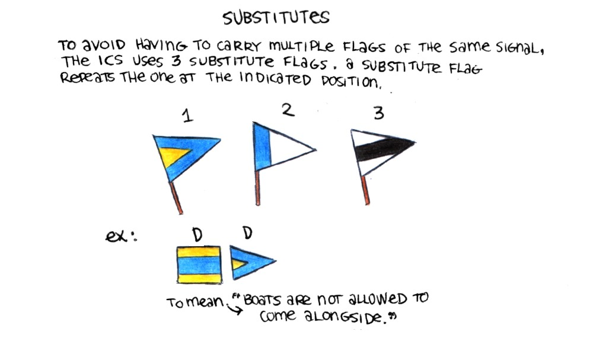
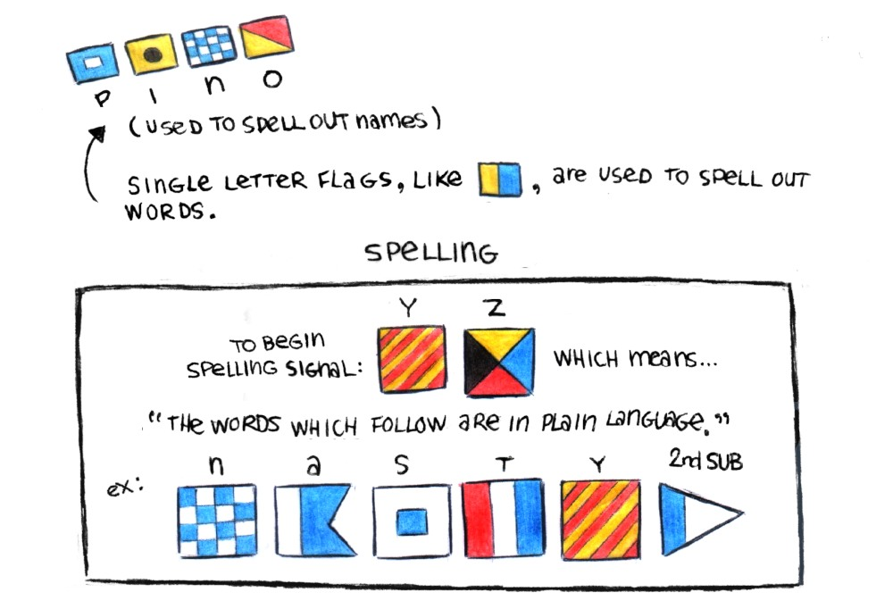

The International Code of Signals is a system of signals and codes designed to communicate important safety and navigational messages when speaking is difficult (because of language barriers, distance, etc). A standardized alphabet was created (see below image), along with a spoken word form for each one, designed to set apart similar-sounding letters like B, V and D. Each letter/numeral was assigned a flag:

Phonetic Alphabet. Alfa : Al fah, Bravo : Brah voh, Charlie : Char Lee, Delta : Dell tah, Echo : Eck oh, Foxtrot : Foks trot, Golf, Hotel : Hoh tel, India : In dee ah, Juliet : Jee lee ett, Kilo : Key loh, Lima : Lee mah, Mike, November : Novem ber, Oscar : Oss cah, Papa: Pah pah, Quebec : Keh Beck, Romeo : Row me oh, Sierra : See air rah, Tango : Tan go, Uniform : Oo nee form, Victor : Vik tah, Whiskey : Wiss key, X-ray : Ecks ray, Yankee : Yang kee, Zulu : Zoo loo, 1st substitute, 2nd substitute, 3rd substitute, Answering penant or decimal point, 1 : Unaone : Oo nah wun, 2 : Bissotwo : Bee soh too, 3 : Terratree : Tay rah tree, 4 : Kartefour : Kar tay fower, 5 : Pantafive : Pan tah five, 6 : Soxisix : Sok see six, 7 : Setteseven : Say tay seven, 8 : Oktoeight : Ok toh ait, 9 : Novenine : No vay niner, 0 : Nadazero : Nah dah zay roh

To save time when signaling, each flag has an assigned meaning to communicate very urgent or common messages. When used alone, the Oscar flag means "man overboard." When paired in twos, flags take on more specific meanings. For example, the Uniform and Whiskey flags used together in that order mean "I wish you a pleasant voyage." Numerals appended to two flags permit for more detailed messages, for example: The Quebec flag paired with the Romeo flags and the 1 number flag means "Can I come alongside?" Three letter signals that begin with Mike are reserved to communicate medical emergencies, for example: Mike followed by Alpha and then by a 2nd substitute flag is code for "I request urgent medical advice."
The title reads: Substitutes. To avoid having to carry multiple flags of the same signal, the ICS(international code of signals) uses 3 substitute flags. A substitute flag repeats the one at the indicated position. A drawing shows 3 flags for the 3 substitute flags. An example shows how to signal DD, which is to fly the flag signal Delta followed by the 1st substitute flag. DD means: "boats are not allowed to come alongside."
Single letter flags, like Kilo, are used to spell out words. An example shows how to spell the boat named Pino, using the following flags: Papa, India, November and Oscar. A title reads "Spelling", followed by: To begin spelling, hoist the Yankee and Zulu flags, which means, "The words which follow are in plain language." An example spells out the name Nastya using the following flags: November, Alpha, Sierra, Tango, Yankee and the 2nd substitute flag.
One practical use of the International Code of Signals(ICS) is that all of the messages are standardized and come in 9 languages: English, French, Italian, German, Japanese, Spanish, Norwegian, Russian and Greek. The signal flag Victor was assigned "I require assistance" as a coded meaning. Under this, is illustration featuring a conversation betweeo a spectacled guillemot and a herring gull. The spectacled guillemot speaks Japanese, while the herring gull speaks Russian. The guillemot is yelling "Tasukete!" but the herring gull does not understand. The guillemot then yells out the coded meaning for Victor, "ビクター! ビクター(Bikutaa! Bikutaa!)" The herring gull understood this, and says Я понимаю (Ya ponimayu, to mean "I understand").
International Code of Signals PDFThe title reads, How to communicate with another vessel using flags. One: A murrelet raises a Kilo flag to mean "I wish to communicate with you." Two: The herring gull raises an answering pennant to mean that the signal was understood. Three: The murrelet raises a Romeo flag followed by a Foxtrot flag, to mean "Will you lead me to a safe anchorage?" Four: The herring gull raises an answering pennant to mean that the signal was understood. Five: The herring gull raises a Charlie flag to mean "Affirmative." Six: The murrelet raises an answering pennant to mean that the signalling is now over. Seven: The herring gull raises an answering pennant to mean that the signal was understood.

If the message is not understood, keep the answering pennant up. A drawing shows two birds on separate boats, the herring gull did not understand the murrelet's message and has kept the answering pennant up. Another way to signal that the message was not understood is to fly the Zulu and Lima flags, to mean "your signal has been received but not understood."
A rabbit waving a pair of oscar hand flags to initiate a conversation with another sailor by semaphore flags.
Hand flag semaphore